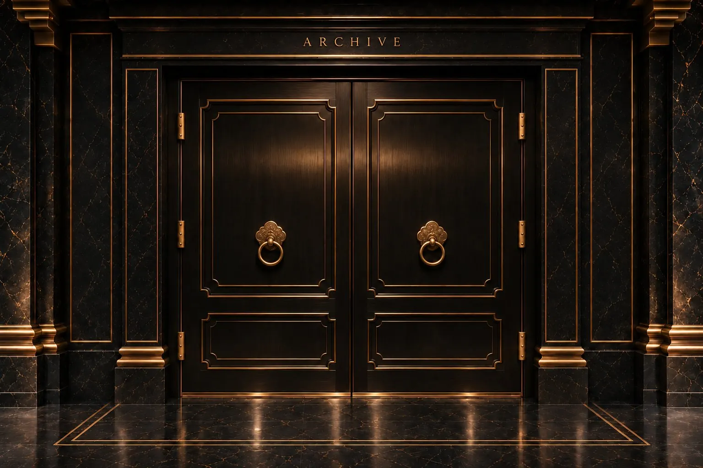
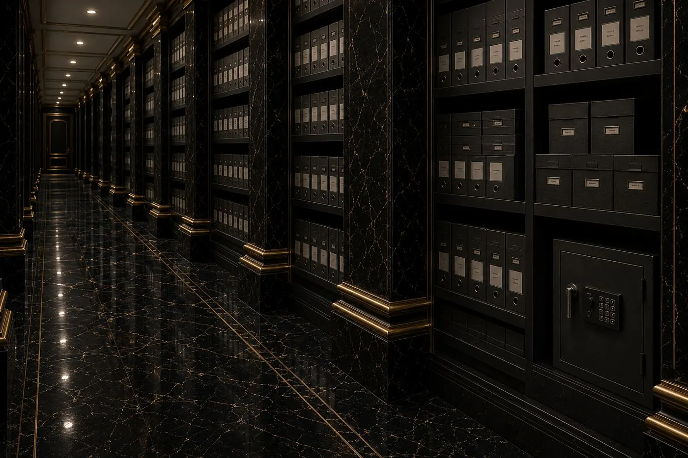
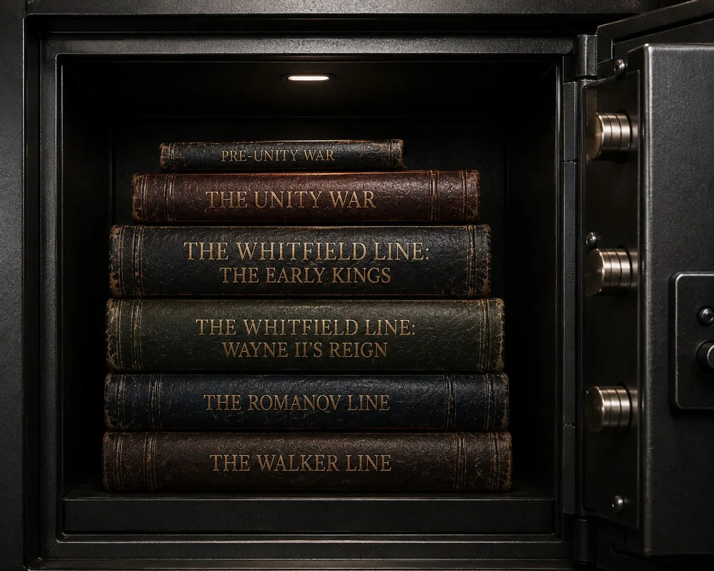
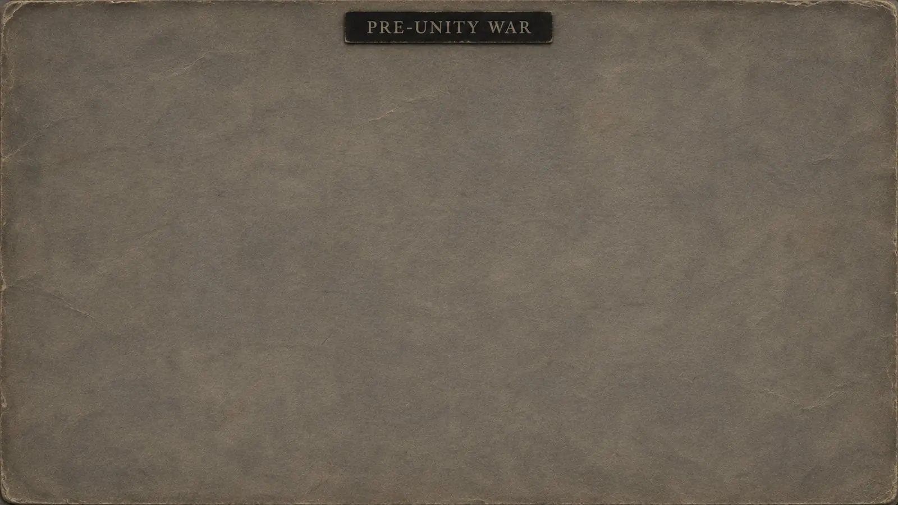
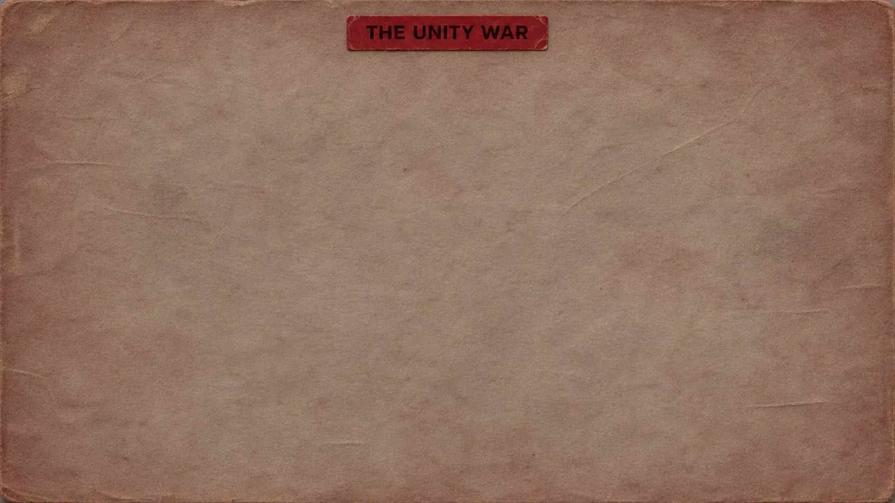
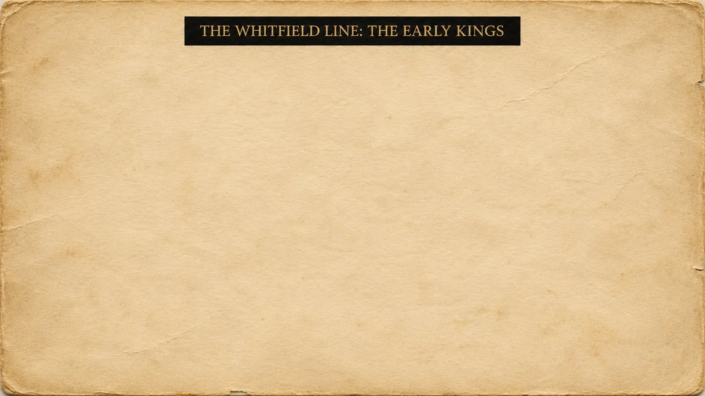
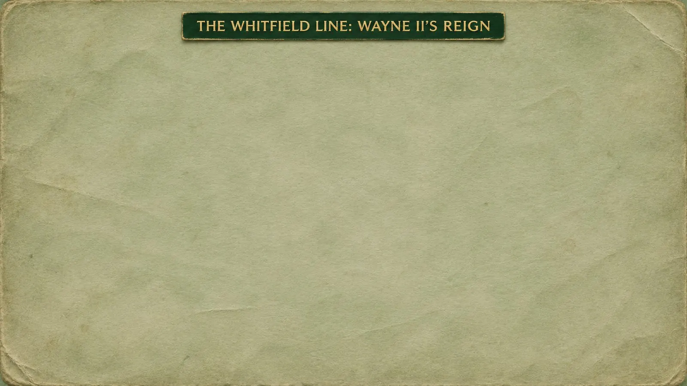
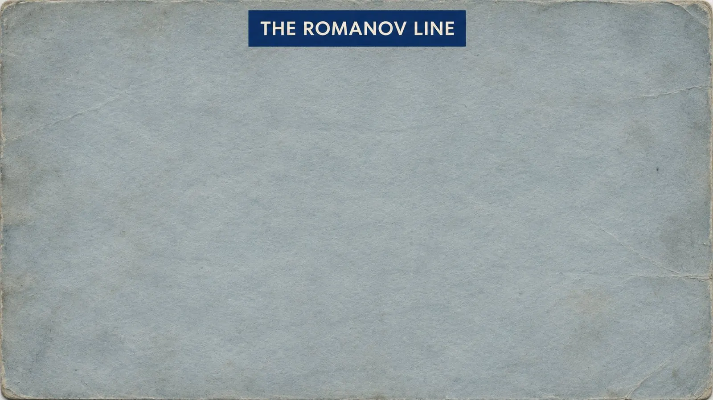
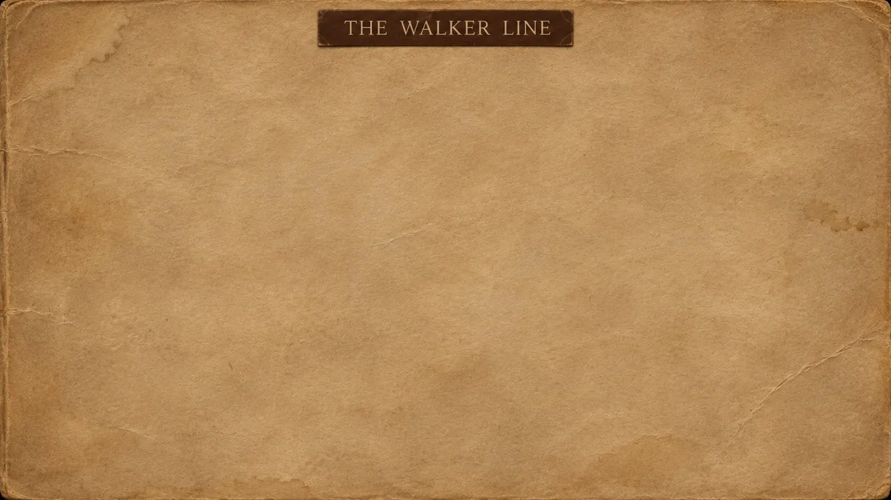

The archivist loves his riddles. Be careful, the answer is rarely what you think.
Answers under ten begin with a zero.
I.







From the private record of Wayne Whitfield I, First King of Eurussia.
I have written this account once before in a shorter form. That version was for my family, and for the people who would one day need a founding story they could live with. This version is for the record. A record should be complete even when the man writing it would rather it were not.
It did not begin with a war. It began with arithmetic. The world was beginning to run out. Soon there would be more people than it could feed. The soil was tiring and the weather was turning against us. Harvests began to fail on several continents in the same seasons, and each time one region failed there was less to spare anywhere else. Water ran short. Reservoirs sank and wells ran dry, and the rain no longer came often enough to fill them. The power grids began to buckle under the demand and the outages spread from one region to the next. Every outage took something else down with it: the pumps, the hospitals, the cold stores, the networks that moved food from where it grew to where it was needed.
Every nation tried to solve it within its own borders. Some rationed. Some stopped selling food abroad. Some went to war with their neighbours over rivers and grain. None of it worked. The problem had outgrown nations.
A summit was called. The public were told it was a cooperative effort to prevent collapse, and for a while the world believed it. Behind closed doors the language was more honest. There were too many people and not enough left to keep them alive. From that summit came the Global Council. Four powers were raised above the rest to direct the response, and every other nation was expected to follow.
Amanda Staleybridge spoke for America. She had been a scientist before she was a politician, and she trusted data over people. Lei Jin spoke for China, a strategist who saw further ahead than any of us and planned for outcomes the rest of us had not yet imagined. Igor Lubechev spoke for Russia. He was a soldier first and last, and he measured every problem by the force it would take to solve it. I spoke for Europe.
I want it recorded that I was not dragged into what followed. I was one of its architects. I argued for it in those rooms with conviction. At the time I believed we were saving the world. I want that written down too because it is true. It excuses nothing. And so the Council saw the crisis as an opportunity, and it took it. Every failing government handed us a little more authority in exchange for a little more hope. Within months the four of us held more power than any four people had ever held.
The models were laid before us again and again. Different analysts, different methods, the same answer. If the population remained as it was, the first systems would fail within months. Food supplies would give out and infrastructure would break down, and mass starvation would follow within a decade. The collapse would be total. In the end somebody said what the numbers meant. Fewer people.
The room did not recoil as it should have. Most of us had reached that answer in private long before anyone said it aloud. Among ourselves we did not pretend. We called it the Culling. On the few documents that ever left those rooms it carried gentler names.
The selection came next, and it was the part we discussed most calmly. The elderly first. Then those who depended on long-term medical care. Then the disabled and the chronically ill. The criteria were written in clean and careful language about capacity and contribution and recovery. The meaning was neither clean nor careful. We had decided who would die so that the rest might live.
It was never announced. There was no need. We already controlled the systems that kept people alive, and we let them fail where we chose. Districts lost power and were never reconnected. Hospitals in poorer regions went dark for days at a time and then for good. Medical shipments stopped arriving. Care homes were left without supplies. Food convoys were redirected to regions judged strategically important. Famines were engineered. Where a region resisted, conflicts were stirred up and left to burn. Whole regions were declared expendable and quietly written off.
On paper every death was a failure of logistics: a broken supply line, a damaged grid, a shortage no one could have prevented. In truth they were executions carried out so slowly and spread so thin that no single order could ever be blamed. The world bled in silence, and for a time it did not know why. I signed those orders. Not all of them. Enough of them.
People are not fools. They saw the pattern long before we expected them to. The dead were too often the same kinds of people in the same kinds of places. When people understood that, the riots began in the cities that were already starving. Supply depots were stripped bare. Government buildings were stormed and burned. Soldiers were sent into the streets to restore order, and in country after country they looked at what they had been ordered to protect and refused. Some turned their weapons on the officers who had given the orders.
Governments fell within months. Borders stopped meaning anything. Whole populations took to the roads looking for somewhere the dying had not reached. Armed factions rose in almost every region of the world. Some fought to preserve the Council's authority. Others fought to destroy it. That was how the Unity War began. It would last fifteen years, and at its start I was still on the wrong side of it.
✦
From the private record of Wayne Whitfield I, First King of Eurussia.
I stayed on the Council longer than I should have. As the world came apart around us I told myself that my presence held back the worst decisions, and that one voice inside those rooms was worth more than any number of voices outside them. The truth is simpler and uglier. Every directive I signed made the Council look lawful for one more day. And all the while, the Council answered the riots with force, and when force failed it answered with more. It held what it could and starved what it could not hold. Cities burned. Nations broke apart. Armies formed and vanished again inside a single campaign. Whole peoples crossed continents looking for somewhere the war had not yet reached, and found that it had. I cannot name the day my conscience broke. It broke slowly and then all at once. There came a point where the reports in front of me stopped being numbers, and after that I could only see them for what they were.
When I left I left quietly. A public resignation would have been a death sentence and would have changed nothing, so I simply vanished from public life and went looking for the people the Council had thrown away. Generals it had exiled for refusing its orders. Resistance cells hiding in the ruins of cities we had written off. Engineers and doctors and soldiers, and ordinary people who had lost everything. I did not raise an army of mercenaries. I raised it from the ones the Council had ruined, and there was no shortage of them. Many of them knew exactly who I was and what I had signed. They had every reason to hate me. They followed me anyway, because I knew how the Council thought and where it was weak. In my journal I wrote that I joined the resistance. That was a kindness to myself. I led it.
Knowing where the Council was weak did not make it weak. In those first years it was still the strongest thing left in the world, and it hunted us. Whole resistance cells were found and wiped out before they ever fired a shot. Towns that sheltered us were starved as an example to the rest. More than once I believed we were finished before we had begun, and there were nights I wondered whether I had only found a new way to get people killed.
Two men stood closer to me than any others through those years. Thomas Walker was a logistics officer when I found him and a general by the end. Armies do not run on courage. They run on food, fuel and ammunition arriving where they are needed, and Thomas made that happen across continents with half the world in ruins. There were winters we survived on his planning alone. He never once asked for credit. The other was Vladimir Romanov, an engineer. He was stern and iron-willed, and the most capable builder I have ever known. He could build a bridge out of wreckage and a working weapon out of scrap. Whenever the war needed something that did not exist, Vladimir made it exist. I did not win the Unity War alone. The three of us won it, with everyone who followed us.
We were not fighting for territory. We had no wish to conquer what the Council had already broken. We were fighting to take apart the structure that had caused the catastrophe, piece by piece, so that it could never be rebuilt. That meant going after each of the four where they stood. It meant fighting across the world.
America came first, because it lay first in our path across the Atlantic. The Council's ships still held the sea, and we could never have crossed openly. Most of our people came over quietly among the refugee boats, as civilians with nothing to their names, and many of those boats never arrived. The rest came with the few warships we had, and the Council's patrols were waiting for them off the coast. It was a small battle as sea battles go, and we lost more than half our ships in it. Only just enough of them got through.
Staleybridge had held America with an iron grip from the moment the Council formed, and her own people had more reason than most to want her gone. Wanting her gone was not the same as being able to do it. We took the first state and raised its people against her, and she took it back within the year and made an example of every town that had helped us. We took it again. That was how America went: a state won, a state lost, a state won back at a worse price than before, five or six of them fought over town by town before the tide began to turn. It turned because her own people turned. The states we had never reached saw what she did to the ones we had, and they rose on their own. By the time we came to Washington it was surrounded on every side, and even then it did not fall quickly. Staleybridge made her last stand there and was killed, but the city cost us more than any state before it. With Staleybridge gone, we took what was left of the American navy, every warship and transport that could still put to sea, and carried the war across the Pacific to China.
China was where the war nearly ended, and not in our favour. Lei Jin was the finest strategist the Council had and fought us like one, always a step ahead and always ready to give ground in order to win it back. China's fleet was waiting for us in the Yellow Sea, and it was Vladimir who led our ships against it. It was the bloodiest battle of the war. The sea burned. Ships went down with every soul aboard, ours and theirs, until there were too few of either left to tell them apart. We broke their fleet in the end, but only just, and what limped ashore afterwards was a fraction of what had sailed. If Lei Jin had held one more squadron in reserve, there would be no Eurussia.
Then came the long war inland, through country that seemed to have no end. We fought street by street through the cities, floor by floor through the apartment blocks, and field by field through the countryside between them. Lei Jin let us take cities and then surrounded us inside them. Whole divisions marched into country that looked empty and were never seen again. There were years in China when we lost more ground than we won, and a winter when I believed we would lose everything. We held because Thomas kept us fed when there was nothing to feed us with, and because the people of China had suffered under the Council as badly as anyone and kept rising behind Lei Jin's lines. Lei Jin was finally cornered at Guangzhou and killed there, but taking the city cost us more lives than any other battle in China.
Russia came last, as I had always known it would, and we came to it already worn to the bone. We crossed into it overland and fought our way west, and Lubechev was a soldier who made us pay for every mile. He knew his winters and he used them, and more than once he broke us against them. In the end we laid siege to Moscow. It went on far longer than any of us wanted. The city was in ruins long before we reached it. When there was nothing left to defend but rubble and the people sheltering in it, Lubechev was given a choice between a city stormed and a city surrendered. He came out of the city and surrendered at its gates. I have never decided whether that was courage or exhaustion. He was the last of the four to fall.
Year by year the war had moved west around the world until the Council had nowhere left to stand. By the end of the fifteenth year it no longer existed. We had won, but most of the people who began the war with me did not live to see the end of it.
The world it left behind was barely recognisable. I did not try to restore the old nations. Too many of them had rotted in the same way the Council had, and they would only have rotted again. We chose to build something new in a place where the old order was too broken ever to return, and Moscow gave us that place. It lay in ruins but it could still be held, and it sat at the centre of everything around it. We renamed it Phoenix.
They crowned me there among the rubble. There was no pageantry and there were no hymns. There was silence and snow and the people who had survived. The first crown was beaten together from melted shrapnel and broken steel. It was all we had, and it was right that the crown of the new world should be made from what the old one had fired at us. A gold crown was made afterwards to rule in. I was always fonder of the first. From that rubble we named the new continent Eurussia. It stands on the bones of two fallen powers: Europe, which I had spoken for, and Russia, whose capital we now called home. It stretches from the Atlantic to the Pacific. One flag. One law. One throne.
We did not hold the Americas or China. The war had gone through most of both from end to end, and most of each lay destroyed. There was nothing left worth saving. Their people did not stay behind either. Many who fought with us in America followed us into China, and many in China followed us on into Russia. Each country emptied behind us as we passed through it. What has risen in those lands since, if anything, I do not know.
The United Kingdom never fought. It shut itself away and waited to see who would win while the rest of the world bled. When the war was over it asked to be part of what we were building. I refused. A country that would not stand with us in the war had no claim on the peace. Nor did we ever go south of what became our border. We know the war reached those lands too, and that the bombs fell there as they fell everywhere else. Whether anything survived down there we did not know.
The old faiths did not survive. Whatever people had believed before, the Culling and the war took it from them. You cannot watch the world decide who should die and still believe something is watching over you. Eurussia would be held together by its people and by the state. There would be nothing else.
I set this down so that it is remembered as it was. Eurussia was not born from noble ideals alone. It was built out of the wreckage of a world that reduced human lives to numbers, and for longer than I care to admit I was one of those doing the counting. Whoever rules after me should never forget where this throne came from.
✦
Wayne I came out of the Unity War with a continent to rule and almost nothing to rule it with. Phoenix rose on the ruins of Moscow, and at its centre stood the Hall of Reclamation, the first seat of the new government. There was no palace. The king governed from a plain steel desk inside the Hall and went home at night to a house not much larger than his neighbours'. He did not govern alone. Thomas Walker built Greentown in the west and Vladimir Romanov built Krashnov in the east, and together with the crown, the other two founding families formed the Peacekeeping Military Corps. It was one force under one command, which served well enough while Eurussia was small. As the continent grew, that command was stretched thinner with every province it had to hold.
The south carried much of the early weight. It was rich in stone and minerals, and they went north in great quantities to build the capital. The wealth that stayed behind drew raiders from beyond the southern border. They struck at many points along it, but the record remembers those that came across the Dusty Plains, the dry scrubland south of Quarryton, and attacked the villages there. Wayne I's younger son Edward led the force that drove them back. He could have destroyed them. Instead he sent them home with a warning: "Cross again and we won't stop at the border."
In his old age Wayne I did what few rulers do. He stepped down while he still lived and placed the crown on his elder son, Frank, and he lived some years more to see his son rule. He is looked on to this day almost as a saint: the man who ended the Council's tyranny and built a fairer world from what was left.
Frank inherited a continent at peace, still governed by one man at one desk. He was firm but fair, an easy and relaxed man until someone tested or crossed him, and then they saw his temper. Many still call him the best ruler Eurussia has ever had. But Eurussia was growing steadily, and Frank could see that no one man could keep running it the way his father had. So he chose to share the power. He founded Parliament, and with it the office of Chancellor to head the civil government and run the continent's finances and trade. The first Chancellor was his sister, Stacey Whitfield, and the first Parliament sat in the Hall of Reclamation where his father had governed.
Frank knew that if the PMC ever went rogue, there would be nothing on the continent to stop it, so he created a second force that could. The Free Company was small, precise and principled, a counterweight to the PMC. It began in a small camp in the mountains north of Phoenix, and it grew faster than the camp could hold. Within a decade it had outgrown its intake, so the Company moved into the capital and took over a pre-war university that had survived the Unity War. There it was made formal as FLAME: Frank's Land-Air Military Experts. The old university frontage still stands as the academy's main building, with walls and newer blocks built up around it, and Frank's statue stands in its hall.
He changed the face of the capital as well. Much of Phoenix as it stands today began under Frank. He built Parliament Tower, the tallest building in Eurussia, and when it was finished the Hall of Reclamation was knocked down. An unnamed figure holding a charter was raised in its place to honour Parliament. By unwritten tradition, nothing in Eurussia has ever been built taller than the Tower. When his father died, Frank built the Hall of Kings in his memory, and every king's portrait since has hung there. Late in his reign he began Whitfield Palace on the hill above the city, and every king after him has added to it. In the end, like his father, Frank stepped down late in life and handed the crown to his son Damian. His father had given the continent peace. Frank gave it growth, and a government that could carry it, and he is remembered for building a continent that no longer depended on one man.
Damian took a throne his grandfather had won and his father had built on, and he did not trust the peace to last. Where Frank had been easy until crossed, Damian was hard from the start. He thought like a soldier, and the provinces feared him as much as they respected him. The PMC was the first thing he turned to. For generations it had answered to a single command and moved from province to province wherever it was needed, and in the long peace a few of its generals had grown rich along the way, demanding payments from towns and merchants in return for keeping the peace. Damian purged them. Then he broke the Corps apart and gave each part a province of its own to answer for, so that no general could ever again move from place to place collecting as he went. It came back with a new name, the Provincial Military Corps, and it was ready none too soon.
In the east, Marik Romanov had been waiting. When he moved, he gave no warning. He declared Krashnov sovereign and cut the continent's communications, and only then did his militia march. With the Corps spread across the provinces, Damian needed time to gather his forces and ready FLAME, and in the few weeks that took, the border towns east of Phoenix fell one by one: Crystal Hill, Snow Point and Short Ridge Valley. Damian's own cousin was one of the first to die. Four years of civil war followed before FLAME broke into Marik's command network at the Battle of Shaska Ridge and his forces fell apart. Damian could have razed Krashnov then. He chose not to.
Marik never forgave the humiliation of Shaska Ridge, and years later he marched on Phoenix again. This time Damian was ready. He had kept enough of the Corps close to the capital that he would never again need weeks to gather it, and the K-Militia was stopped well short of the towns it had taken in the first war. This time Damian did not stop at the border. He carried the war east and took Krashnov's provinces one by one, cutting its food off long before he came near the capital. Marik made his last stand at Granite Pass, and a joint unit of FLAME and the PMC killed him there. William Whitfield, of Edward's line, died in that unit. With the continental forces at the gates of the capital, Marik's son Yuri surrendered, and Damian accepted.
The wars had cost the Romanovs son after son, and Damian knew that one bad day could do the same to his own family. If the king and his heirs were ever lost, the government could not be allowed to fall with them. So he built the Citadel. Parliament Tower was where the delegates of every province and department met to debate. The Citadel was where the officials worked who kept Phoenix running from one day to the next, and where that work would go on whatever became of the crown. He placed it under the Citadel Guard, which answers to the government. Marik had also shown how easily a continent could be blinded, and Damian meant it never to happen again. He poured a large share of Eurussia's wealth into creating Cybertech and gave it a system of its own, so that even if the continent's communications were cut, Cybertech would still see what was happening.
Damian did not live long after the wars, and in the end it was illness, not war, that took him. His grandfather had given the continent peace and his father had given it growth. Damian gave it strength. He left Eurussia better organised and better defended than he found it, and he is remembered for putting down the bloody uprisings that threatened to unravel everything his father and grandfather had built.
Matthew came to the throne with Krashnov beaten twice and quiet. Damian's eldest son was never much liked, but he was feared, and the threat he chose to face came from the south. Early in his reign, rebels from beyond the border stirred up the southern provinces, and six of them rose in rebellion: Hatchet Hills, Quarryton, Bridgeford, Thornbury, Millbrook and Harrowfield. They bound themselves together as the Crimson Pact and asked Hatchet Hills to lead them. For the first time FLAME, the K-Militia and the PMC fought side by side. They took the rebel provinces one after another, with the Battle of Quarryton the hardest fought, and what was left of the rebels fell back to the Dusty Plains, the same ground where Edward had once turned back the raiders. That was where they were finished, and the K-Militia went home to the east. Hatchet Hills had already abandoned its allies and slipped away home. Matthew did not give chase. He was busy finishing off the provinces it had left behind, and by the time that was done he had decided Hatchet Hills was not worth the cost of taking. His mind was already on something larger.
He meant to close the southern border for good. The south was still prosperous, but it resented how much of its wealth had gone north to build the capital. Matthew summoned the leaders of the southern provinces, and the rebels from beyond the border, to a meeting at Quarryton, and there he laid out the Southern Defence Programme. A great trench would be cut along the southern border to protect the continent. The work would revitalise the south, and the jobs and wages it brought would replace much of what had been taken to build Phoenix. Anyone from beyond the border who helped to build it would earn the right to settle inside Eurussia. It was his elder sister Beatrice who won them over. She believed in the plan, a secure border and a south restored, and many agreed.
The trench took thirty years. FLAME drew the plans and PMC engineers ran the logistics, and the labour came from both sides of the line. For a time the south boomed, and it seemed Matthew had found a way to bring everyone together. But as the trench neared completion, Matthew told Beatrice the truth. Neither promise had ever been meant to be kept. The south had only ever been needed to build the trench, and once it was finished, those who had built it would be cast aside. Beatrice, who had given her word at Quarryton, argued against him. He overruled her.
Once the trench was finished, Matthew turned on the people who had built it. The outsiders, still waiting for the land they had been promised, were slaughtered and their bodies thrown into the trench they had dug, and the bridges were raised behind them. The few who escaped fled south and swore revenge. That betrayal is the root of the hatred the people beyond the trench hold for the continent. Eurussia's own southern provinces fared little better. The work was over and their wealth had gone into the ground. Town after town emptied. Trench maintenance brought in a little, but the south never came close to what it had been. Building the trench broke the southern provinces. Quarryton, which lives on its quarries, is one of the few towns that survived.
The trench needed a guardian, and FLAME was given it for good. The FLAME Mercenaries were formed to hold it under George Whitfield, Matthew's nephew. George's father, Matthew's younger brother, had died when George was a boy, and Matthew had taken him in and sent him to FLAME. George owed him everything, and he held the line without question. With the south sealed, the PMC turned to internal security.
Through all those years, Matthew's eyes never left the trench, and in making the continent safe from the south he left it unsafe within. The PMC his father had spread across the provinces rotted under him. Each base came to run on its own orders, and the corruption Damian had purged crept back. In the east, Krashnov grew dangerous under Yuri, and Matthew let it. Yuri had named his price for sending the K-Militia south, and Matthew kept to it so long as the east stayed quiet. The south paid for his promises.
The state honours him for the trench, and his statue stands at the bronze doors of these archives. The people think far less of him. His death was suspicious, and it was whispered that Parliament and the PMC had a hand in it. Nothing was ever proven, and his death was never explained. He is remembered for pouring the better part of his life into carving the southern trench.
✦
Wayne II was Matthew's only child, and he was raised for the crown. He trained at FLAME for eight years, and his two eldest children were born in that time. He learned kingship at his father's side and took the throne when Matthew died. What he inherited was a rotting PMC, a dangerous Krashnov and a bitter south, and he spent much of his reign dealing with all three. He started with the army. The PMC he found was scattered across facilities in several provinces, with no centre and no single standard, and each base answered to little more than itself. His first great appointment, General Johnathan Wilkes, drew it back together in Phoenix under a permanent command and gave it a new name: the Phoenix Military Corps. Then the king and his general created Soldiers of the Future, so that every soldier entering the Corps would first be tested and trained to the same standard.
A rebuilt army needed better weapons. Wayne commissioned Armstech, a weapons complex hidden in the mountains of Central Eurussia, and placed it in the hands of .
A few years later, on a visit to Greentown, the king saw the drones the Walkers had been building since Kieran's day. Sebastian had been his father's ally, but it was Sebastian's son Luke the king took to. Luke had a feel for that kind of technology and was more forward-thinking than his father, so the king told him about Armstech, and Luke gave him his grandfather Kieran's blueprints, which had been kept in the Walker family archive. It was the start of a friendship that would last the rest of their lives. When Armstech was ready, the old arsenals were cleared out in the Great Decommission. Every force on the continent handed in its older weapons and was issued the new NG series made at Armstech, so that for the first time the PMC, FLAME and the K-Militia all carried the same arms. The surrendered weapons were stored near Armstech.
The first real crisis of the reign came from the north. For generations it had been the continent's manufacturing heart, but power and wealth had been drawing steadily into the centre. In the end Parliament voted to move northern manufacturing to Phoenix. The king approved it, and a rising member of Parliament named Lionel Brady signed it. With its factories gone, the north lost the work it had lived on, and it rose. The Northern Rebellions lasted the better part of two years before the PMC and FLAME put them down, and the king's son David Whitfield fought there as a FLAME operative.
The rebels did not keep the war in the north. They carried it into Phoenix, and they struck on Founder's Day, the anniversary of Wayne I's coronation, when every branch of the Whitfield family gathered in the capital. A bomb went off among them. Twenty-eight people died, among them George Whitfield's wife and daughter and the last of Stacey Whitfield's line. The king, his wife and their children survived only because they arrived late. In the days that followed, fear and paranoia took hold of Phoenix, and riots broke out across the capital. When the bombers had been arrested, the king went to Parliament Square, spoke to the crowds and calmed them, and the rioting ended, though the decision that started it all had been his as much as anyone's. Founder's Day has been a day of mourning ever since.
Then the king lost his wife. Her name is not recorded here. He withdrew into his grief, and while he grieved, Lionel Brady quietly took on more and more of the work of government.
The next blow came from across the sea. When the Old United Kingdom struck Greenport, the king sent David to Greentown with FLAME. In the fighting James Adams abandoned his comrade Pyro, who was captured and burned. David went in after Pyro, rescued him and destroyed the garrison that had held him, and after a siege of ninety-six hours the Old United Kingdom's forces withdrew. James paid for what he had done. He was declared an enemy of the state, hunted through Crystal Hill, Snow Point and Short Ridge Valley, and shot down at Grapon Valley. He was presumed dead and the file was closed.
The riots had shown how exposed the west was, and Luke Walker wanted to be sure it could never happen again. He asked the king for a permanent answer to the Old United Kingdom. Project V followed, and the Old United Kingdom has not been heard from since.
The bombing, the Phoenix riots and the Greentown Riots had all come within three years, and all under Chancellor Brian Delaney. Then Lionel Brady brought the king records showing that Delaney had been embezzling public funds. On top of three disasters in three years, it was enough, and Delaney was dismissed. Lionel then made his case for the post. The king needed a man who would make the hard decisions he struggled to make himself, Lionel told him, and he had already proven he would make them. The king gave him the post. In the years that followed, Lionel proved as able as he was ambitious, and he won over the king's eldest daughter, Elizabeth. The king saw in the match a bridge between Parliament and the Whitfields' military name, and a husband who might steady his daughter, and he arranged it.
The army changed hands too. When Wilkes retired, David Whitfield became Commander of the PMC, the youngest general in Eurussia's history. Pyro recovered as well. He was rebuilt with Armstech technology and took command of FLAME Academy from Commander Roland Brandt, who had led FLAME for many years. Early in his command Brandt had created the four-person F Units, and after the riots he commissioned the monument to the soldiers who held Greentown. Pyro was more forward-thinking than his predecessor. The F Units gave FLAME some of the best soldiers on the continent, but he knew that an army without intelligence is fighting blind, so alongside them he created a new unit whose work was gathering it.
David's own test came from inside the Corps. In Lewton Province a rogue PMC faction was preying on the capital's wealthy through extortion, kidnapping and trafficking. David crushed it and reformed the Corps from within, Cybertech was given a major upgrade and a new facility, and Lewton became a fortified gateway to Phoenix.
After a few happy years, Elizabeth's marriage began to fail. The more power Lionel gathered, the more it consumed him, and he cared less and less for the people it was meant to serve, while Elizabeth had always put them first. They grew apart until she could no longer bear to be near him. When she went to her father, he told her to persevere. So she found another way out. In the south, command of the trench had passed from George Whitfield to Edmund Calder and then to Victor Stroud, and discontent with Stroud was growing. She saw her chance and asked her father for the post. The king relieved Stroud and gave her command of the Southern Trench, and she left Phoenix and her husband behind. Her first year tested her at once. Trench operatives expelled under Stroud seized Shaddock Province. Bryn Walker, governor of neighbouring Marsh Valley, opened his province to David's troops and took in Shaddock's refugees. David retook Shaddock and the rebel leader was killed, and Phoenix installed Bryn as governor of Shaddock with a PMC garrison. It showed Elizabeth what soldiers thrown out by their own command could turn into, and from then on she looked after her own.
Shaddock had been put down, but in the south-east, Hatchet Hills was causing trouble again. It had been left standing since the Crimson Pact, and when its piracy and sabotage began choking continental logistics, the PMC bombed the province. That only started a longer fight. For two years afterwards Hatchet Hills fighters killed PMC troops along the border and raided into the continent, led by a fighter the soldiers came to call the Angel of Death.
In the end the king ordered Hatchet Hills brought under central authority, and David led the campaign. It became the Second Hatchet Hills Rebellion. David met the Angel of Death in close combat and neither could finish the other. The PMC withdrew, and a treaty reaffirmed the province's autonomy. The south gave David no rest. Not long after, a surge came at the trench, and he brought PMC troops down for six months to serve under his sister's command.
With the Hatchet Hills treaty signed and the surge at the trench beaten back, there was no trouble left inside the continent, and for the first time in a long while Eurussia was at peace. To mark it, the king announced the Apex Celebration and invited the Romanovs, the Walkers and delegates from across the provinces to the capital for a great banquet, with the continent at the height of its power.
✦
Krashnov began as an engineer's city. Vladimir Romanov, one of the three founders of Eurussia and the man who had led the resistance fleet in the Yellow Sea, chose the east because it was rich in resources: ore and stone in the mountains, timber in the forests and fertile land on the plains. He built Krashnov beneath its mountains and constructed refineries, foundries and fabrication halls to make the materials the new continent needed. He laid an extensive rail network across the east to move what it produced, and converted armoured transports into freight vehicles to run on it. His family carried the work outwards. His younger son Dmitri became the first governor of Slate Rock, where he opened the mines and built the ironworks and steelworks that turned what came out of the ground into metal, and his daughter Anastasia married into the Orlovs, the timber family of Cedar Town whose wood built much of early Krashnov. Vladimir ruled Krashnov for the rest of his life, and when he died of old age, Krashnov passed to Alexei.
Vladimir's elder son Alexei did not share his father's trust in Phoenix. Vladimir had fought beside Wayne I through the Unity War, but Alexei had not. For all the work going on in Krashnov, he could see that Phoenix was still bigger and stronger, and he resented it. He watched FLAME settle into Phoenix beside the PMC, two forces centred on the capital. He went to Frank and asked for part of the PMC to be stationed in Krashnov for good. Frank refused. The PMC already protected the whole continent, Krashnov included, and it answered to the crown. To Alexei, that was exactly the problem. Every soldier on the continent answered to a Whitfield, and if the Whitfields ever turned on the east, Krashnov would have nothing of its own to fight with. Frank himself had shown him the answer: he had built FLAME so that if the PMC ever went rogue, there would be an army to stand against it. Alexei did the same for the east, in secret. He created the Krashnov Militia, recruited from Krashnov's industrial and research sectors. To arm it, he turned to his brother Dmitri, and the ironworks and steelworks Dmitri had built at Slate Rock to supply the new continent were turned to making weapons, ammunition and armoured vehicles instead. The K-Militia was loyal to Krashnov before Eurussia, built on technological dominance and absolute obedience. Beneath the old furnace yards Alexei built Forge Six to train it in insurgency, sabotage, urban siege and the means of defeating FLAME. The K-Militia gave Krashnov an army of its own, but it also gave it the secrecy and suspicion that have marked it ever since, and it is a large part of why Krashnov became a military state in a way that Phoenix and Greentown never did. Alexei had four sons and a daughter: Marik, Pavel, Sergei, Mikhail and Anya.
What Alexei built out of fear, his eldest son Marik turned into ambition. Alexei had wanted a way to defend Krashnov. Marik wanted far more. He believed Krashnov was better than Phoenix, and that it should not be thought of as the continent's second capital but as its real one. He grew the K-Militia to tens of thousands, then declared Krashnov sovereign, sealed its borders, cut its data links and struck without warning. Not all his family followed him. His brother Mikhail refused to support the rebellion and was executed on Marik's orders in its first days. The war ran for four years and ended at Shaska Ridge, where FLAME broke into Marik's command network and his brother Pavel, who commanded the most elite division of the K-Militia, was killed.
Defeat did not end Marik's ambition. He never forgave the humiliation of Shaska Ridge or the family he had lost in that war, and years later he marched on Phoenix again. Before he moved, he razed Shades Reach, which had protested against the first rebellion, as a warning to anyone who thought of standing against him. This time Phoenix was ready. After the first rebellion Damian had learned not to be caught spread thin, and when the K-Militia marched west, the continental forces met it before it could reach the border towns and drove it back. Then they carried the war into Krashnov's own provinces. Longwood was taken first and the capital began to go hungry. Cedar Town followed, and Suln, bound to the Romanovs since Marik's sister Anya married into its Belov family, fought hardest of all before it gave way. Shades Reach did not resist Damian's forces. It helped them through.
With his provinces lost, Marik made his last stand at Granite Pass, the mountain approach to Krashnov, and led the final assault himself. He died there. His brother Sergei died beside him, and so did his youngest son Konstantin. It was Marik's widow, Ludmila, who ended the war. She had lost her husband and her youngest child on the same field, and with the continental forces at the gates and the city going hungry, she persuaded her surviving son Yuri, now head of the family, to surrender without conditions. Damian accepted, and Krashnov was not razed.
Yuri vowed never to fight his father's war again. He kept that vow, and he resented it for the rest of his life. If he could not fight, he would make Krashnov too strong ever to be beaten again. He rebuilt it with an iron grip of surveillance, weapons development and labour control. He kept the peace with Phoenix and Greentown, but his aim was a Krashnov stronger than it had ever been, and stronger than the other two families. The Kozlov generals, married into the family through his sister Vera, held the K-Militia for him. Inside his own borders he tolerated no defiance. Shades Reach had already been razed once under Marik. Under Yuri it was razed again, punishment for the help it had given Damian's forces. When the Crimson Pact rose, Matthew called on Krashnov to send the K-Militia south, and made it plain that if Krashnov refused, Phoenix would finish with the south and then come for the east. Yuri agreed, but he named his price: if the K-Militia fought for Phoenix this time, Phoenix would turn a blind eye to Krashnov afterwards. Matthew accepted. The K-Militia fought beside FLAME and the PMC and then went home, and for the rest of Matthew's reign no one in Phoenix looked closely at what Krashnov was building.
It was widely known in Krashnov that Yuri was a changed man after his wife Svetlana died. She died while their children were young, and afterwards he became bitter and violent, and he beat his children for the smallest failings. Andrew, the elder son and heir, his younger brother Petr and their sister Galina grew up with that, and without a mother to protect them. Galina was the first to get out. She chose an ordinary life, married outside the ruling family and cut all contact with her brothers. Where she lives is not recorded. Petr was fond of his sister, and he blamed their father for driving her away, so not long after she left, he killed him. Andrew never had his brother punished for it, and he has kept Petr close ever since.
Andrew succeeded his father, and he was determined to be a different ruler. He had seen what growing up in Yuri's household did to his sister Galina, who wanted nothing more to do with the family, so he has spent his reign easing the legacy of the men before him. Krashnov remains a surveillance state with labour control, but it is far better than it was.
His first act was to exile the Kozlovs, every one of them, even those tied to his own family. It was Yuri who had given them their generals' posts in the K-Militia, and while they remained in Krashnov, Petr's life was not safe. Andrew gave the K-Militia to Petr to manage, and control of it has been carefully divided ever since. Andrew alone can activate and deploy it. Petr maintains it and commands it on his behalf, and General Varduk, Petr's right hand, is its general and its public face. Its training is said to make the PMC's look easy.
Early in his reign he also ordered Forge Six closed.
He ended the razings of Shades Reach, and although it still skirmishes with the K-Militia, it has never been razed under Andrew. He also set about fortifying the provinces. Cedar Town, one of Krashnov's most important provinces, was among the first, and its governor, Viktor Orlov, built a fortified stronghold there.
Beyond his own borders, Andrew has kept faith with the other families. Krashnov took part in the Great Decommission without asking for any exception, and the Belovs' furnaces in Suln supply steel for Armstech.
He does not rule alone. As a young man he married Olesia of the Morozovs, Suln's leading family, and the marriage bound Suln to the Romanovs. She is his partner in power rather than his consort, and it is she who deals with the delegates who come to Krashnov. Their only child, Tatiana, was groomed to succeed him until it became clear it was not the life she wanted.
Andrew's friendships with Wayne II and Luke Walker have held the three families together for a generation, and at the Apex Celebration Andrew, Olesia and Tatiana stood with the others.
✦
Before the Unity War, Thomas Walker grew up on a farm in Europe, where he learned how food is grown and how it is moved from where it grows to where it is needed. When the harvests failed and the farm went under, he joined the army. It was already falling apart, and with so few left who knew how to keep soldiers supplied, what he had learned on the farm made him a logistics officer. That was what he was when Wayne I found him. He served under Wayne through the Unity War, rising to general, as one of his closest allies. When the war was over, he told Wayne he would put his efforts into feeding the new continent, and with his background on the farm there was no one better suited to it. He built Greentown in the west, where the land was good for farming, to grow food for the whole continent. At first they simply farmed it, and whatever profit Greentown made, Thomas put back into it to make the place better for the people who lived and worked there. It was that way of thinking that caught Phoenix's eye. As money began to come in from Phoenix, Thomas upgraded the irrigation and built granaries and research stations to work on the soil and on crops that could survive the new climate, so that Greentown could grow more food every year. Those years under Thomas were Greentown's golden age. The farms kept spreading across the west, and towns grew up around them, Kilrock and Marsh Valley among them. Along the coast he built fishing towns, among them Greenport and Greenrock, so that Greentown could add food from the sea to what it grew, while its harvests still went out to the rest of the continent over land. The trade between Greentown and Phoenix has bound the two families closer ever since. In his old age Thomas stepped down and handed Greentown to his daughter Helena. By then Kilrock had grown from a township into a province, and his son Isaac became its first governor. He kept his father's values all his life, and Kilrock is the one part of the west that has never lost them.
Helena had watched her father's Greentown spread across the west, its farms, towns and fishing villages, and she saw where the wealth was going. It was spread across the families who worked the land. They lived well, but none of them were rich the way the Whitfields were rich, and neither were the Walkers. Helena hated that. She wanted Greentown to make as much money as it could, and above all she wanted it for herself and her family, so she set about running Greentown as a business. Under her, farming in Greentown was industrialised. Large food companies took over the land and ran it on an industrial scale, and the small family farms that had built Greentown could not compete with them. The ones who profited most were the Dunmores, grain merchants and one of Greentown's most prominent families after the Walkers. Helena wanted them tied to her own family, so she pushed her sister Rosalie into marrying into them. It was a match made for what it was worth to the Walkers, not for love. Her ambition was to make Greentown richer and more powerful than Phoenix or Krashnov, and she went about it by raising the price of the food she sent east. FLAME was growing fast in those years and needed more from the west every season, so Helena made the crown pay for every bit of it. That set her against Frank and his firm but fair rule, and against his sister Stacey, who as Chancellor ran the continent's finances and felt every rise. They fought with argument rather than armies across the floor of Parliament and nearly always over money, until Stacey took her aside in private inside the Parliament building and warned her plainly that if the prices kept rising, the crown would stop sending the PMC to protect the west, as Greentown had no army of its own. Helena realised that Stacey had a point, and to her face she seemed to take the warning seriously. Behind it, she stopped fighting Phoenix in the open and turned her attention inward instead. She bought out farmland across the west, took struggling farms into private hands and brought them under Walker control, and took hold of the grain routes that carried Greentown's harvests to the rest of the continent. By the time her rule ended, much of what fed the west belonged to her family and to the companies and merchants that served it. It ended suddenly. A major stroke left her bedridden and unable to rule, and the family chose her son Kieran to lead Greentown in her place. For the twelve years she had left, she could only lie and watch as he undid everything she had built.
Kieran was given control of Greentown with much of the west in the hands of his mother's companies and merchants. He had seen where her path was leading and believed she was wrong, so he set about bringing Greentown back to the values it was founded on. He broke up the estates she had built and gave the farms back to the families who worked them, and the people celebrated him for it. He did not want Greentown to become like Krashnov, with the wealth and power held by a few at the top. In his view, the more people who did well, the better off the whole of Greentown would be.
Giving the farms away cost the Walkers dearly, and for a time the Dunmores, who still held Greentown's grain, were richer than the Walkers themselves. So Kieran broke the Dunmores' hold on the grain, the hold his mother had helped them build, and the Dunmores did not give it up quietly. They armed their own men, burned the farms Kieran had handed back and poisoned the fields, so that nothing would grow on them for years. Greentown had no army of its own, so Kieran went to Damian and begged him for help, and Damian sent the PMC and FLAME west. They made short work of the Dunmores. Their armed men were killed and their estates were taken. Rosalie begged the Walkers to spare them, and her own family called her a traitor for it. It was only because of her, his aunt, that Kieran gave the Dunmores a choice: die there, or leave the continent for good. They chose to leave, and they took a ship to the Old United Kingdom. Rosalie went with them.
Not every Walker agreed with what Kieran had done. His younger brother Silas believed their mother had been right, and he never forgave Kieran for giving away what she had built. He had been close to their aunt Rosalie too, and watching her sail into exile turned his resentment into something harder.
Kieran cared more for what Greentown could build than for what it could earn. He was a gifted engineer who developed Greentown's drone technology and other advanced systems, and his blueprints were kept in the family archive. When the Krashnov rebellions came, they gave him the chance to show what a restored Greentown could do. He stood with Damian as his ally and envoy, and Greentown became a sanctuary and supply depot for the continental forces. His sister Matilda had married Jonas Fenwick of Greenport, and it was Jonas who turned the old fishing town into a shipping port. During the rebellions he shipped Greentown's supplies east by sea and opened the northern passage, the route that later carried Greenport's trade to Krashnov. Silas saw his chance in the second rebellion. He made peace with his brother, or seemed to, and offered to take charge of the supply convoys, and Kieran let him. The orders left Greentown at the price Kieran had agreed with Damian, but by the time they reached the continental forces, Silas had doubled it and was keeping the difference. It was Damian's officers who complained to Kieran about the price of Walker supplies. When Kieran found out what his brother had been doing, he had him arrested. Silas was taken to the edge of Greentown's provinces and told that if he ever set foot in Greentown again, he would be killed. It was the second time the restoration had split the family. The Walkers served again when the Crimson Pact rose in the south. Before the Battle of Quarryton, Marsh Valley became the storage hub for the continental forces, and this time Kieran gave the supply convoys that ran from it to his younger son Gideon. The town grew so quickly that by the end of the war it was large enough to be a province.
Kieran had given Greentown everything he had, and when the wars were over he handed it to his elder son. One of Sebastian's first acts was to make his brother Gideon the first governor of Marsh Valley, as a reward for keeping the armies supplied at Quarryton. Then he carried the restoration further. When Matthew laid out his plan for the trench, Sebastian believed in it: a secure border, a south restored, and southern trade routes protected for Greentown, which makes its money from trade. He did more than back it. He sent a great many of his own people south to build the western third of the trench, working beside the people of the southern provinces. Throughout the years of building, Greentown also kept the south supplied. In return Greentown was given territory and the protected trade routes it had been offered.
When the trench was finished, Matthew broke his promise to the outsiders who had built the rest of it. Instead of the right to settle, he had them slaughtered. To Sebastian it showed that Matthew's word was worth nothing, and what followed made it worse. Once the work was done, the southern provinces began to empty, and the routes Greentown had been promised now carried little trade. Sebastian fell out with Matthew, and in private he wished someone else were on the throne. It was later said that Parliament sounded him out in those last months, and that he would not listen. Matthew died not long after, and Greentown did not mourn him. With the south broken, Greentown had to find its money elsewhere, so Sebastian turned its trade east, sending more of its harvests to Phoenix and, through Greenport and the northern passage, to Krashnov. To run the harvests and their distribution on that scale, he created the Ministry of Agriculture. Its first Minister was his elder sister Eleanor, Kieran's eldest child, who had stepped aside from the succession to serve the land, and the post Rebecca Walker holds today began with her. For all that, Greentown still had no standing force of its own. After Sebastian fell out with Matthew, the PMC pulled back from the west, but with the south sealed behind the trench and the Old United Kingdom no threat, Sebastian believed Greentown was safe enough without one. In his later years, Sebastian stepped down and handed Greentown to his son Luke.
Luke, born after two daughters, grew close to Wayne II while his father still ruled Greentown, and their friendship has lasted ever since. Luke met his wife Vivian Sinclair, of one of Greentown's most prominent families, at a ball at the Sinclair house, and they have three children: Rebecca, Lily and Stephen.
Luke carried on his father's search for new markets and opened trade with the Old United Kingdom, and for a few years it went well. But the Dunmores had never forgotten their exile, and their descendants there had kept the grudge alive for generations. Now they claimed the Walkers were charging the republic double what the continent paid for the same food. It was a lie, and Luke laid out the prices the continent paid to prove it, but the Dunmores convinced the republic that his records were forged, and its negotiators came back to the table demanding lower prices. Luke refused to lower them, and in answer to their demands he limited the grain he would sell them. The talks collapsed. Pushed on by the Dunmores, the republic answered by striking Greenport, the west's food port. The port burned, and its mayor Alder Fenwick died with it. Raiders breached the defences, refugees flooded inland, and the Greentown Riots began.
After the riots had ended, Luke wanted to make sure they could never happen again. The first thing he did was go to his friend the king, who promised to find a way to keep Greentown safe. Project V followed, and the Old United Kingdom has not been heard from since. While Project V was under way, Luke turned to the damage at home. Large parts of northern Greentown lay in ruins and needed major rebuilding. Luke met with the mayors of the two ports to decide how best to do it: his cousin Harold Fenwick of Greenport, whose grandmother had been born a Walker, and Conrad Rourke of Greenrock, who was married to Luke's sister Imogen. Harold took charge of Greenport. With his daughter Sarah at his side, he began rebuilding its docks, its shipyards and the ships that had burned with them. But Conrad argued that rebuilding alone was not enough. The Old United Kingdom had come by sea, so Greentown needed a navy to protect its coast and the convoys that sailed from Greenport.
Luke agreed. Together with Conrad he built Greentown a fleet, the only one on the continent. It was based at Greenrock, which was rebuilt as a military port and changed from a fishing town into the continent's main naval fortress. Harold's son Jack later joined the fleet. Its ships now patrol the sea around the trench as well, with two vessels kept near Pacific Command.
Luke also founded the Green Guard so that Greentown would never again depend on others for its defence. Its soldiers are skilled in drone warfare, technology and guerrilla tactics. A new force needed somewhere to train them, so Luke founded Ember West, the west's own military academy, and put Natalie Spykes in charge of it. In time, Pyro proposed taking Ember West's best cadets into FLAME. Luke brokered the arrangement. In exchange, FLAME agreed to put Greentown first if it ever needed help.
Greentown's reach also grew in Luke's time, through Marsh Valley, which Gideon's line had governed since the Crimson Pact. When trench soldiers expelled under Victor Stroud seized neighbouring Shaddock in the Midwest Uprising, Gideon's grandson Bryn Walker was governor of Marsh Valley. He opened his province to David Whitfield's troops and took in Shaddock's refugees. Once Shaddock was retaken, Phoenix made Bryn its governor, so it became the one province where a Walker governs on Phoenix's behalf. His brother Rhys has governed Marsh Valley in his place ever since.
When peace came to the continent at last, the king called the Apex Celebration to mark Eurussia at the height of its power. The three founding families and delegates from across the provinces were invited to a great banquet in the capital. For the Walkers it marked how far Greentown had come since the riots. It was rebuilt and protected, and its wealth was spread once more across the families who worked the land, as Thomas had built it. Luke and Vivian went to Phoenix with their three children. Rebecca had stepped aside from the succession to give herself to the Ministry of Agriculture, which she now heads. Stephen is a cadet at Ember West and is spoken of as his father's successor. Lily is raising her son Cal.
✦